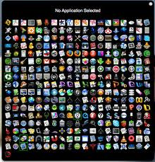
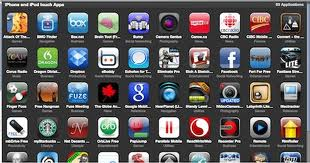

E hoarding is the accumulation of electronic items or files and can take shape in many different ways. Often we receive email and hang on to those emails for extended periods of time in case they need to refer to them later. Some of us delete those emails but neglect to empty the deleted files folder. The Sent folder also accumulates emails and should be emptied occasionally.
Photos are another file that should not only be backed up, but should be purged occasionally. With digital cameras, we no longer choose the photos that we want to keep as we did with the film that was developed. Hundreds of photos, good and bad accumulate and run the risk of being lost forever. Rather then being selective with the photos, with digital cameras we are able to take hundreds of photos and then download them onto our computers for future use. It is always a good idea to back up those photos and to remove the photos that cannot be used. The best thing to do would be to make a photo slide show on a CD or DVD and then distribute them to friends or relatives. There are many products on the market to help you accomplish this easily.
Bookmarks are another form of E hoarding. Often we accumulate bookmarks and never visit that sight again. If you have older bookmarks, you should periodically check those sites because often those sites are no longer valid.
Word documents, music files, scanned documents, pdf files, downloaded program files that you no longer need, etc. the E hoarding list goes on. So ask yourself are you guilty of being an E Hoarder? If so, happy purging.
How important it is to give your computer a good cleaning inside and out in order to keep your machine in tip-top shape, but apparently there are some of you out there that aren't listening. Online hoarding is quickly becoming a web 2.0 phenomenon that many people may not even realize they have contracted —hoarding isn't a computer virus that you can catch, but it's a habit that should be broken ASAP. The secret to a healthy computer is cutting the fat — fat being an overabundance of emails, files, movies, downloads, and games that rarely (or worse, never) get deleted. This can slow down your computer to a crawl, despite any upgrades in hard drive space and RAM you've added. The closer you get to the limit on your computer's storage, the closer it is to crashing for good. Want to find out if you're a digital hoarder? Check the symptoms after the jump. •You keep every email "just in case" •You keep all of your movies on your laptop so you'll have them with you when you travel, instead of choosing one or two to take along. •You've never deleted a single photo you've imported from your camera •You've never emptied your web browser's cache (or don't know what that is) •You download files from the Internet, but never empty your downloads folder •The last time you played Spore was in early 2009, but it's still installed on your computer •You can't explain why it's a good idea to "back-up" your important files •You don't know what it means to store information "in the cloud"  If you identify with a majority (or all of these) symptoms, chances are you're a hoarder. What should you do now if you're a digital hoarder? Start practicing safe computing by ridding your machine of any unnecessary files, emails, games, and documents, and back up your essential data to an external hard drive or in the cloud. Have any other questions about storing data, backing up your information, or cleaning out the guts of your computer? Ask away!